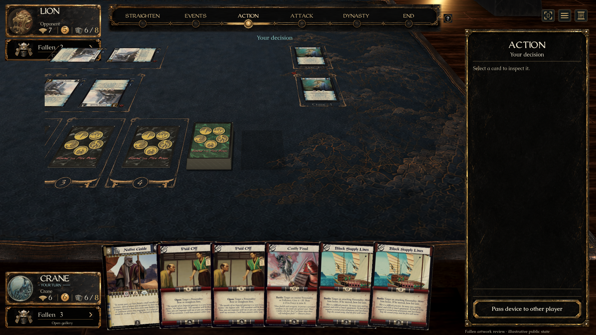
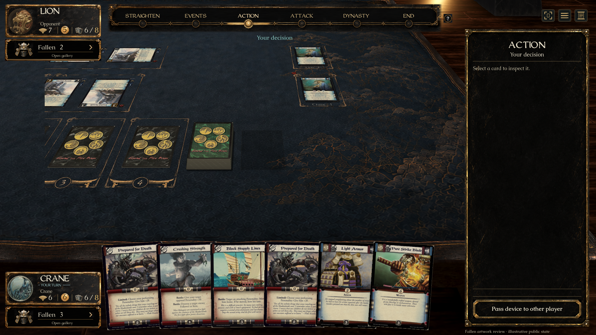

Native Godot captures with a table card deliberately placed underneath the opponent’s counter. The same setup failed before the fix and passes afterward.


1280 × 720 · Other player’s seat · Normal fitted table · Launch verification
Illustrative public fixture. Checks confirm correct gallery owner, blocked covered-card hover/wheel, normal uncovered-table zoom, clean drag release, Escape dismissal and unchanged session state. Original lacquer art and fonts retained.